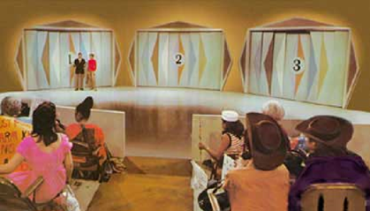
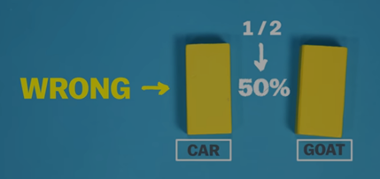

Introduction:
How would you like to be a part of a game show? In a world overflowing with entertainment, we love watching contestants compete in various exciting challenges and quizzes to win prizes or cash rewards; it’s almost as if we are competing ourselves! Popular ones include Jeopardy, Quiz, and a personal favourite: Who wants to be a millionaire?
But back in the 80s, one show stood out, and quickly became more than just a cheap Saturday-night amusement. The monty hall show, whether purposefully or not, sent shockwaves amongst the mathematicians at the time. A simple brain teaser, involving a couple of farm animals and a sports car, stumps Statisticians even today. So, let's learn about how an innocent game show challenged the principle foundations of probability, and permanently changed the gambling theory as we have perceived it.
The classic origin:
The Monty Hall problem is named after the game show’s famous host. The most popular prize to be won was a brand new automobile, but the way to succeed was even more intriguing and way more thoughtful.
The brand new car is behind one of the three doors. Behind the other two are goats. You have to choose one of the doors, say door 1. Monty then shows you the goat behind one of the doors you DIDN’T choose, say door 3. Then comes the question: you are allowed to switch between the door you chose, and door 2. Should you switch?
People quickly understood that it was more a game of probability than chance. The answer seemed simple: behind either of the two doors is the car, so it's a 50-50 scenario, and you should not switch as it won’t really create any difference. Then what’s the problem? Well, as the game rose to discussion, a new perspective was formed. Marylin von Savant, an esteemed figure at the time, published her view on the subject: You should switch. She stated that since it was a blind test, the car is 2 ⁄ 3 more likely to be behind door 2, and with good reason. This approach baffled others, and thousands of practising mathematicians and statisticians refused to believe in anything but the original 50-50 technique. It's been decades yet it still confuses the professionals. In such a case, what is the correct answer?
The explanation:
There are 3 doors. There is a car behind one of them, and a goat behind the other two. In a random choice, you are 66% likely to pick a door with a goat behind it. Monty is forced to reveal one of the doors with the goat behind it, irrespective of the one you have picked. Since in the most probable scenario (66%), you have picked a goat, the car would lie in the door that is remaining. So, if you switch, the chances of you winning the car are 2 out of 3.
Another way to understand the maths is this: The results are counterintuitive. For the problem, if the contestant is correct on the first choice, he will be incorrect after a switch. Or, if the contestant was incorrect on the first choice, he will be correct after a switch. Since the probability of being incorrect on the first choice is ⅔ , then the probability of being correct after a switch is ⅔ .
Hence, by factoring in variable change, it makes more sense to switch the door of your choice.
The controversy:
To this date, the Monty hall paradox is still discussed thousands of times, each with a brand new perspective to the issue. Despite the mathematical proof, mathematicians and the public alike refused to acknowledge that Savant’s solution made sense. She received letters in thousands, all of which showed neglect to her mathematical prowess and higher understanding of the puzzle. Perhaps it is the psychological aspect, which drives people to factor in their emotions and ‘luck’ rather than basic probability. Regardless, many spirited debates and high engagement was offered when it came to the game show, and people are still picking sides today, on which solution is the correct one..
Conclusion: Future?
Statisticians in various universities and institutes today still use Monty Hall as an example of the deceptiveness and fascinating counter-intuitiveness of probability; the game show elaborates the concept of making decisions with incomplete information, and can even act as a tool to tackle cognitive biases. Monty Hall reflects on the significance of updating hypotheses, and is even an important tool in understanding modern coding, Ai, and game theory. All in all, Such questions help us delve deeper into scientific and logical understanding, changing circumstances, and most importantly, winning a brand new car! So, would you switch?